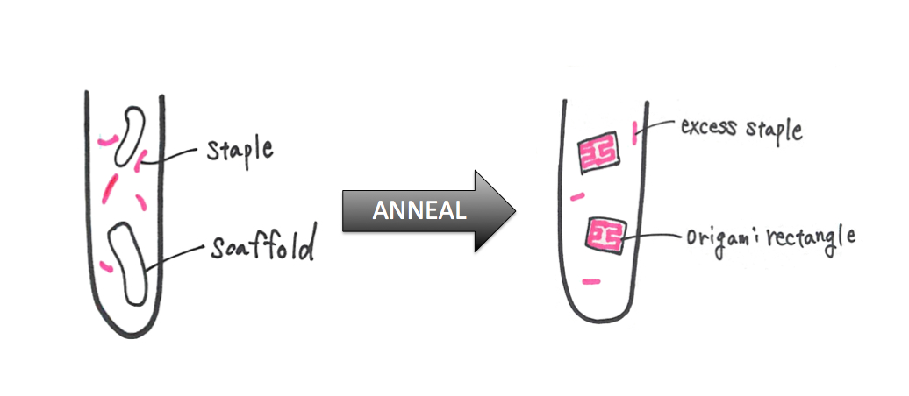
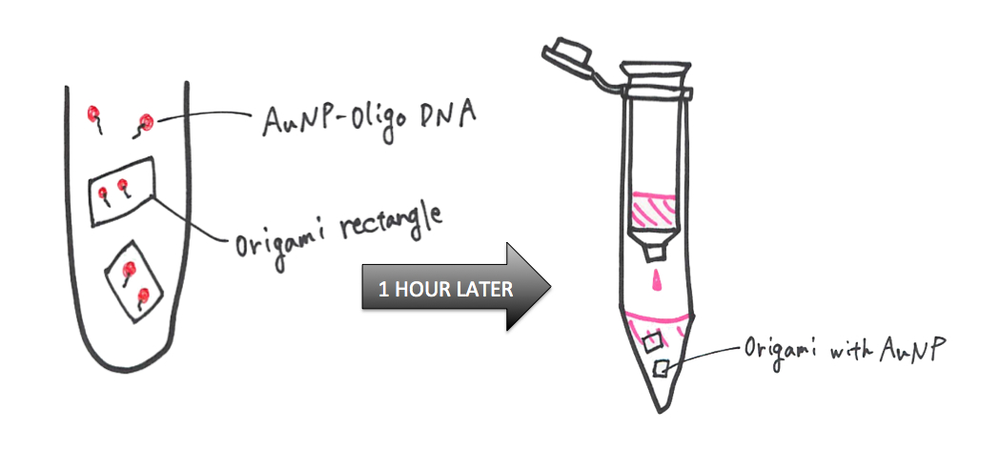
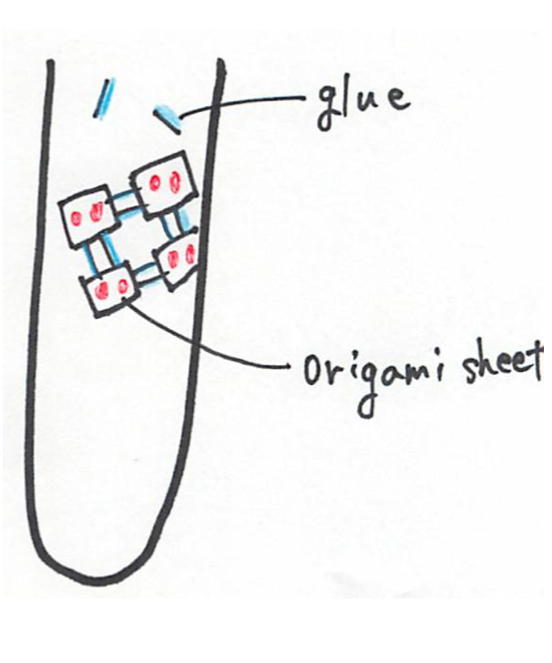

EXPERIMENT
MATERIALS
All staple DNA, anchor oligo DNA, glue DNA and gold nanoparticle were purchased from Sigma-Aldrich Japan.
Single-stranded M13mp18 DNA were purchased from BioLabs Inc.
EXPERIMENT METHODS
Method Ⅰ---Designing the DNA origami
We designed our structure based on a previously established DNA origami
(1) , and modified the strands a little. This modification was made to allow the AuNPs possible to attach to the sheet, and to allow the origami to connect to each other. The sequences of all the staple strands, the two different kinds of strands (glue strands) needed to connect the origami and the oligo DNA used to create the AuNP-anchor oligo DNA conjugate are available here.
We designed the position of AuNPs attached to the sheet so that the distance between each gold particle becomes roughly the same.
The tip of each triangle in the image below is where we attached the AuNP.
Method Ⅱ---Synthesis of origami rectangle (1),(3)
1. Dissolve each staple strands in 1×TAE buffer and prepare 0.2mM staple solution.
2. Mix all staple solution (2μl of each) to prepare staple-mix solution.
3. Mix reagents for PCR as following order in micro tube(Table1.);
Table1. Mix reagents for PCR
|
Milli Q
|
3.9μl
|
|
10×TAE
|
3μl
|
|
12.5mM Magnesium acetate
|
7.5μl
|
|
100nM Staple DNA solution
|
3.6μl
|
|
20nM Scaffold DNA solution
|
12μl
|
|
total
|
30μl
|
4. Anneal sample as following conditions
95℃ 5min
↓
95℃→20℃ gradually lower the annealing temperature
( 1℃/min in 0.1℃ steps)
5. Resulting solution contains DNA origami rectangles.

MethodⅢ---Preparation of AuNP-anchor oligo DNA conjugates (2)
1. Dissolve SH-modified ahchor oligo DNA in 0.072M DTT for 1h at room temperature to remove the protective group.
2. Purify anchor oligo DNA by using NAP-5 column.
3. Dilute resulting solution with 10mM Tris-HCl pH7.0 and measure Abs at 260 nm. (0.7Abs)
Calculate the concentration by using the formulas below.
0.7(Abs)×0.85×5=(2.975 OD) ⁄ 850μl= (3.5 OD) ⁄ (1000μl )
3.5OD ⁄ 1000μl×35.1μg ⁄ OD=(122.85μg) ⁄ ml
→0.0317×10-6 mol / ml→0.0317×106 nM
Concentration of AuNP (diemeter:5nm) solution ; 5.5×106 nano-particles /liter
Calculate the number of ahcnor oligo DNA moles we needed to prepare AuNP-anchor oligo DNA conjugates by using the fomulas below.
Mol conjugated oligonucleotide=4πr2×Cn×(35pmol/cm2)×V
r ; radius of AuNP (nm)
Cn ; concentration of AuNP solution (nano-particles ⁄ liter)
v ; volume of AuNP solution (L)
∴4π(2.5nm)2×5.5×106(particles ⁄ L)×35(pmol ⁄ cm2)×1(ml)=1.511nmol
mol conjugated anchor oligo DNA ; 1.511nmol
(volume of AuNP solution ; 1ml)
Concentration of purified anchor oligo DNA solution ; 0.317×106nM
4. Mix 1ml AuNP solution and 94.64μl anchor oligo DNA solution (contains 3nmol oligo).
5. Rotate the solution 16h at room temperature at low speed.
6. Add 1M NaCl and 0.1M sodium phosphate buffer (137μl of each) to the solution.
Final concentration ; 0.1M NaCl 10mM phosphate buffer
7. Rotate the solution 24h at room temperature at low speed.
8. Centrifuge 60min at 45,000g.
9. Remove the supernatant and resuspend the red oil in the same volume of 0.1M NaCl / 10mM sodium phosphate buffer.
10. Centrifuge 60min at 45,000g.
11. Remove the supernatant again and resuspend the red oil in the same volume of 0.3M NaCl / 0.01% sodium azide / 10mM sodium phosphate buffer.
12. easure Absorbance at 520nm. (0.26Abs)
Calculate the concentration of the conjugate solution by using folulas below.
Cn=(A520×1)(107×b)
b ; path length of the cuvette (typically 1cm)
Cn=(0.26(Abs)×1) / (107×0.5)=0.52×107M=52nM
Method Ⅳ---Attaching AuNP on the surface of DNA origami and colum purification
1. Mix 15μl DNA origami solution and 172.5μl AuNP-oligo solution and leave 1h at room temperature.
2. Purify solution to remove excess staples and AuNP-oligo by using Sephacryl S-300HR (GE healthcare). (3)

Method Ⅴ---AFM observation (3)
1. Before AFM, add 2μl glue DNA solution to 98μl purified DNA origami with AuNP solution and leave it more than 1h.

2. 1μl sample were adsorbed on the mica sheet for 5min at room temperature and then add 50μl 1×TAE buffer.
3. Get AFM images using Multimode 8 (Bruker).
4. AFM probes ; SCANASYST-FLUID (Nitride Coated Silicon Tip on a Nitride Cantilever), SCANASYST-FLUID＋(Silicon Tip on Nitride Lever)
Method Ⅵ---Absorbance determination
1. Determine absorbance at 200-900nm using V-630 UV VIS-Spectrophotometer (JASCO).
Cuvette ; 5μl micro cell (stepped type) (JASCO)
Table2. Sample solution
|
|
DNA origami
|
Glue DNA
|
AuNP-Oligo DNA
|
|
1
|
○
|
○
|
ー
|
|
2
|
○
|
ー
|
○
|
|
3
|
ー
|
ー
|
○
|
REFERENCE
(1) Paul W.K.Rothemund. Folding DNA to create nanoscale shapes and patterns. Nature. 2006 Mar 16;440(7082):297-302. image picture
(2) Taton TA. Preparation of gold nanoparticle-DNA conjugates. Current Protocols in Nucleic Acid Chemistry. 2002 Aug;Chapter 12:Unit 12.2.
(3)Wickham SF, Endo M, Katsuda Y, Hidaka K, Bath J, Sugiyama H, Turberfield AJ. Direct observation of stepwise movement of a synthetic molecular transporter. Nature Nanotechnology. 2011 Mar;6(3):166-9.